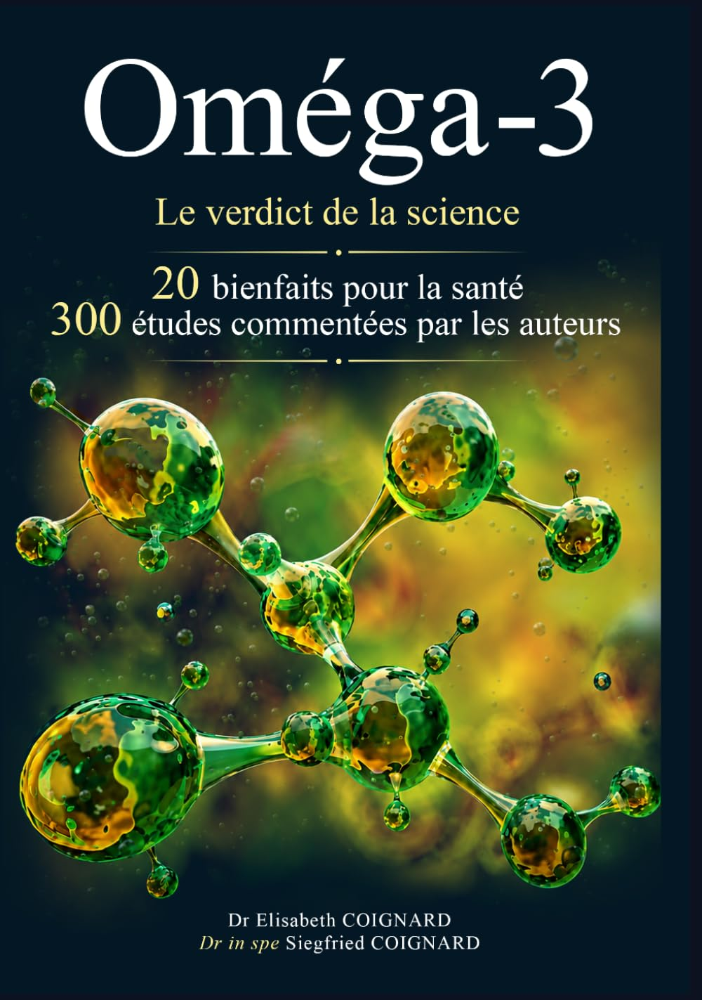
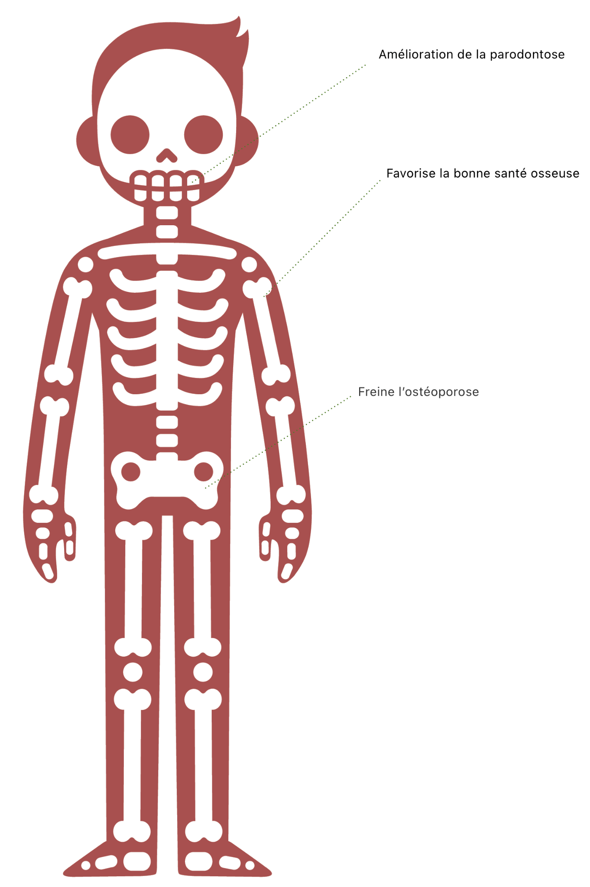
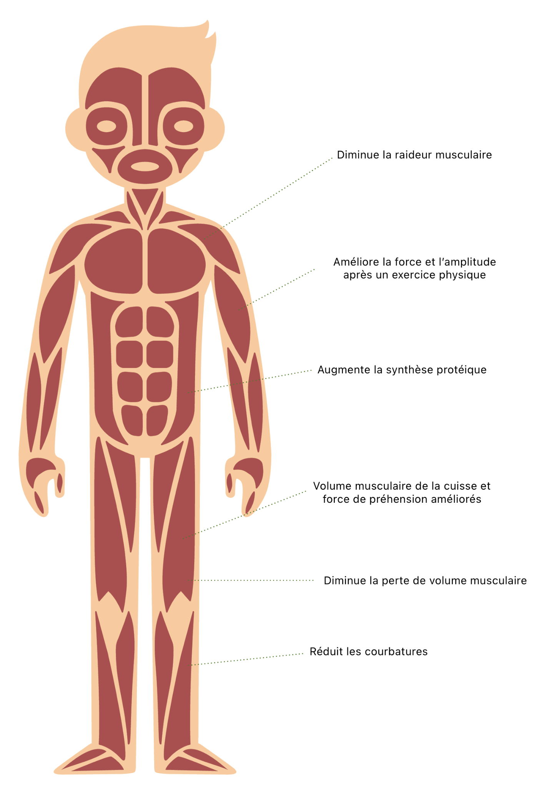
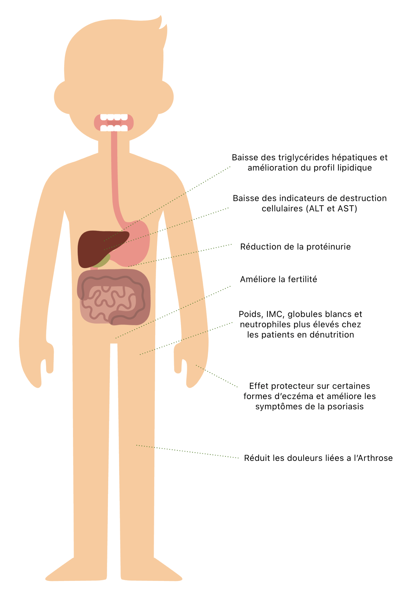
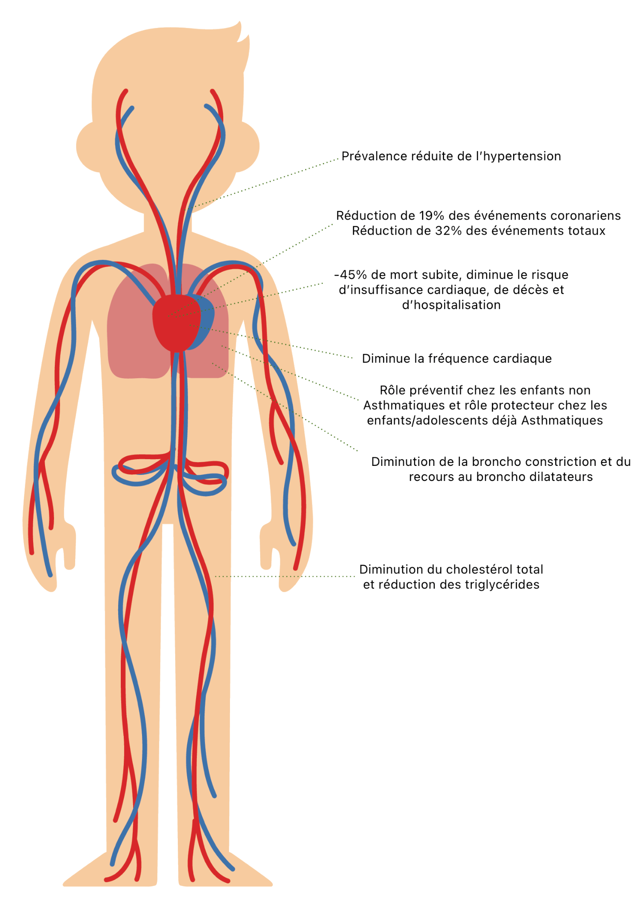
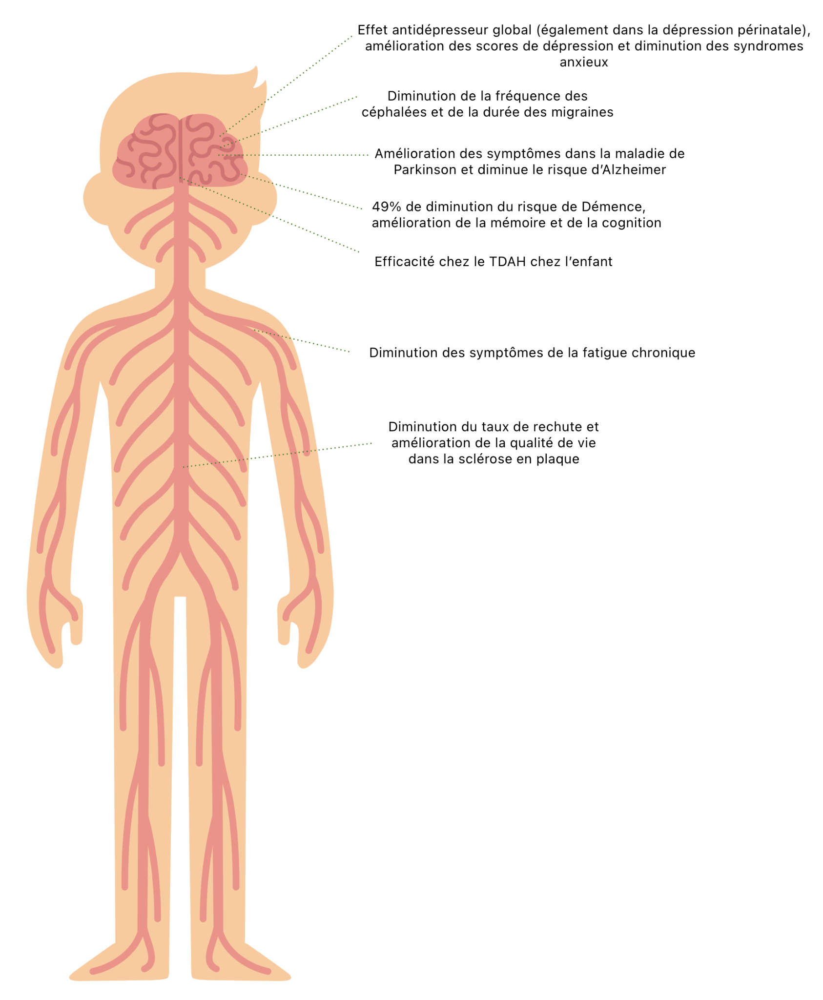

Un guide scientifique et accessible pour comprendre et profiter pleinement des bienfaits des oméga-3.

Pour vous aujourd’hui : les dernières pages du livre, qui résument les bienfaits.
Chaque semaine : une étude décryptée et ses bénéfices concrets.
Après avoir cherché à soutenir ma santé par de la micronutrition, je me suis découvert une passion pour les oméga-3 qui ont transformé ma vie.
Pendant 2 ans nous avons fait le tri dans les 95 000 études scientifiques pour en retenir les 300 les plus significatives.
Le livre est disponible sur amazon.fr sur le lien ci-dessous :
amazon.fr/dp/B0HLPTZQS8Je suis distributeur Eqology, toutefois le livre se concentre uniquement sur la science des oméga-3 et ne cite aucun produit.
Si vous souhaitez apporter votre pierre à l’édifice, merci de me faire part de vos commentaires et ajouts : vous ferez partie des remerciements lors de la prochaine édition !
Open to work, une rétribution de suivi ou toute autre question :
Un parrain vous accompagne tout au long de votre parcours : tutoriels et supports.
contactez-moi !À très bientôt !




